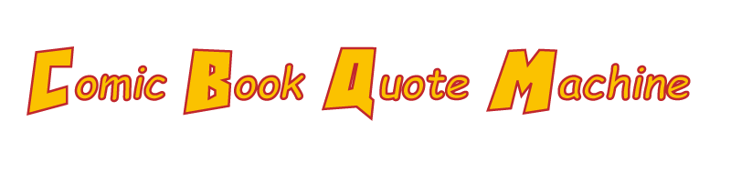

<DOCTYPE html>
<html lang="en">
    <head>
        <meta charset="UTF-8">
        <title>Comic Book Quote Machine</title>
        <link rel="stylesheet" href="style.css">
    </head>

    <body>
        

        <div id="action-bubble">
            <p id="quote-text"></p>
        </div>
        
        <div id="get-quote" onClick="displayQuote()">Get Quote</div>

        <script>
            function displayQuote() {
                var quotes = [
                    "True happiness is found along a middle road. There lies the balance and the harmony-- with reason and emotion, not at war but hand in hand - Aquaman", 
                    "This is saying our generation will never matter. But we have to matter. If we don't, there is no future worth saving. - Ms. Marvel", 
                    "A true Defender never raises arms against an innocent, no matter how they threaten you. - Doctor Strange", 
                    "The future is worth it. All the pain. All the tears. The future is worth the fight. - Martian Manhunter", 
                    "Don’t kill if you can wound, don’t wound if you can subdue, don’t subdue, if you can pacify, and don’t raise a hand at all, until you’ve extended it. - Wonder Woman",
                    "The fight for freedom needs no more martyrs -- it needs victory -- it needs no more atrocities to stir our blood -- it is stirred! - Black Panther",
                    "A hero can be anyone, even a man doing something as simple and reassuring as putting a coat around a little boy’s shoulder to let him know that the world hadn’t ended. - Batman",
                    "In brightest day, in blackest night, no evil shall escape my sight. Let those who worship evil’s might, beware my power — Green Lantern’s light! - Green Lanturn",
                    "If a man chooses to do evil…it becomes my sacred duty to bash him to a pulp! - Crime Crusher",
                    "The greatest power on Earth is the magnificent power we all of us possess ... the power of the human brain! - Charles Xavier",
                    "That's half of heroing, noticing things. Noticing, and not being afraid. Because when you decide not to be afraid, you can find friends in super unexpected places. - Ms.Marvel",
                    "It's not dying that you need to be afraid of, it's never having lived in the first place. - The Green Hornet"
                    
                ];
                var quoteIndex = Math.floor(Math.random() * quotes.length);
                var quoteArea = document.getElementById("quote-text");
                quoteArea.innerText = quotes[quoteIndex];
            }
        </script>
    </body>
</html>